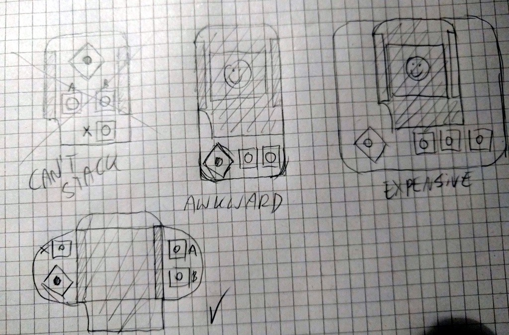
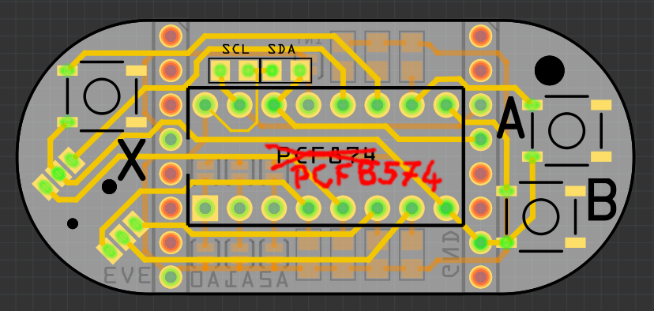

Button Layout¶
Published on 2017-01-10 in D1 Mini X-Pad Shield.
need an easy way to add user input capabilities to my D1 Mini boards. A joystick and some buttons would be probably the most versatile approach – I could also use an encoder, like I did for Nano TTY , however, that works well for menus, but not so good for games, and I want to try making some games too in the future. So I need something roughly like a game pad. A 4-way joystick, at least two buttons (accept and back), possibly a third button for start/settings, and possibly the fire button on the joystick. That’s eight buttons together. Since the ESP8266 doesn’t have a lot of GPIO pins, I will probably use a port expander – this way I can just connect it to the I²C bus.
Next, I need to choose the layout for this shield. Using a standard D1 Mini shield shape doesn’t seem like a good idea, because I want to be able to stack this with the display and led matrix shields. I could probably use the “double” shield for this, but it would be better if the buttons and joystick were accessible even if it’s not the top shield.
I considered several options:
I even considered more exotic solutions, like putting all the buttons on the sides of the board, so that they are accessible – but that’s hard to do with the joystick, and makes it too easy to press the reset button accidentally.
I finally decided to use the last design on that image above. Yes, it’s going to be problematic with the double shield – but that can be worked around by making one of the stacks higher.
I couldn’t sleep last night, so I got up and designed the PCB for this in Fritzing. I’m going to use the good old PCF874 port expander, even though it’s a bit dated and weird to use – but at least it’s easy to get. Routing everything properly on such a small board was a bit tricky, but finally I even managed to add the footprints for the I²C pullup resistors and the address selection jumpers. I’m pretty happy with how it came out:One trick I had to do – I put the joystick up- side-down. It won’t affect anything, but it makes it easier to route the ground pin for it. Now just waiting for the PCB.